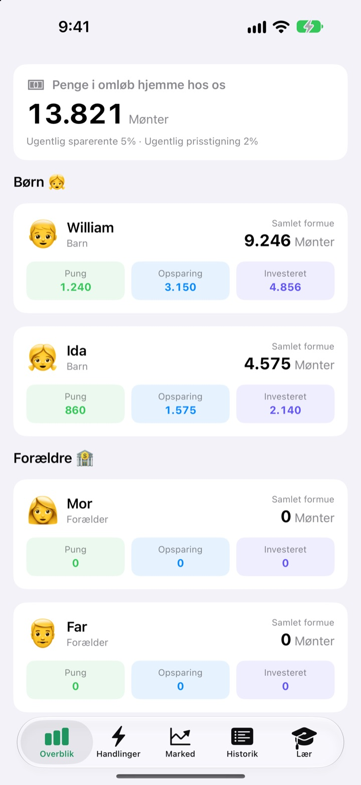
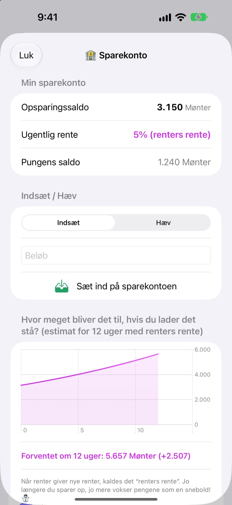
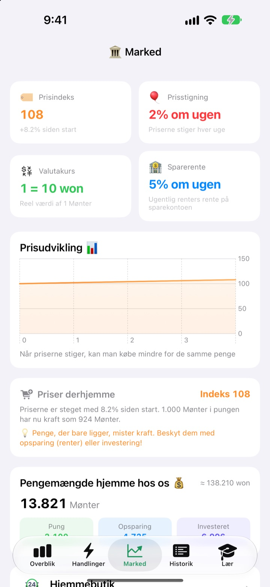
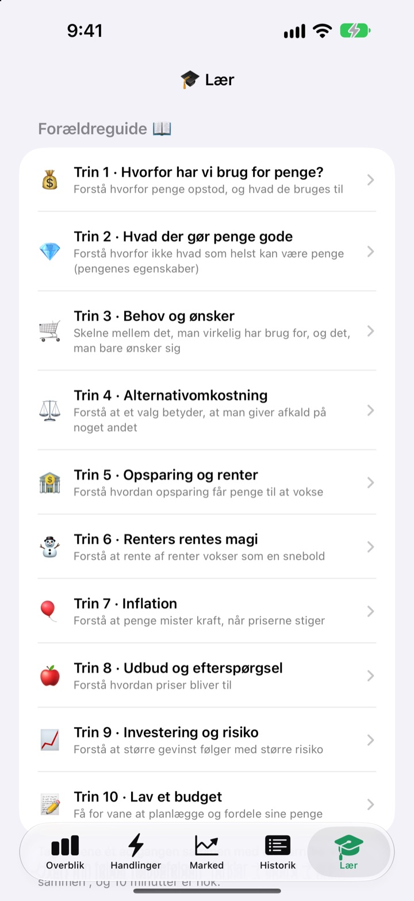

Lommepengedagen bliver
til en time om penge
Du er familiens centralbank, og børnene er kunderne. De får lommepenge i jeres egen valuta, køber slik, ser renten lande på opsparingen og mærker op- og nedturene i en øvefond.
Alle funktioner er gratis. Der bruges aldrig rigtige penge.

Hvor ville du gemme 1.000 mønter?
De samme 1.000 mønter ligger i en pung, på en opsparing og i tre fonde. Spring en uge frem ad gangen, og se hvad der sker med hver af dem. Det hele følger de samme regler som appen.
"Spar op, så vokser de." Forstår et barn det egentlig?
Rente, rentes rente, inflation: Jo mere man forklarer, jo fjernere lyder det. I SukSuk Lommepenge tjener, bruger og venter børnene selv. Når de opdager, at sidste uges opsparing har fået rente, ryger de næste lommepenge direkte ind på opsparingen.
Se tålmodighed betale sig
Penge på opsparingen får rentes rente hver uge. Du bestemmer renten, og en graf viser, hvad beløbet vokser til på 12 uger, hvis det får lov at ligge.
Ikke åbnet appen i nogle dage? Når den åbnes, bliver alle skyldige uger udbetalt på én gang.

Se priserne tære på pungen
Fanen Marked samler familiens prisindeks, inflation, rente, pengemængde og fondspriser på én skærm. Når priserne stiger, kan man se, hvor meget mindre 1.000 mønter i pungen nu kan købe.
Børnene ser i klare tal, at penge, der bare ligger, skrumper, mens sparede eller investerede penge holder værdien.

Ti samtaler at tage sammen
Forældreguiden fører jer gennem ti trin: hvorfor vi har brug for penge, behov og ønsker, alternativomkostninger, opsparing og rente, rentes rente, inflation, investering og risiko og til sidst et budget.
En rentes rente-beregner og en beregner til priseksperimenter lader jer ændre tallene og se, hvad der sker.

Kom i gang på tre trin
- 1
Navngiv jeres valuta
Bønner, Stjerner, Mønter, eller hvad familien nu vil kalde den.
- 2
Vælg en forældre-PIN
Fire cifre. Kun den, der kender den, kan give lommepenge eller ændre bankindstillingerne.
- 3
Tilføj familien
Tilføj børn og forældre, giv de første lommepenge, og så er I i gang.
Hvad ligger hvor
- Overblik
- Alles pung, opsparing og investeringer på ét blik
- Handlinger
- Giv eller træk lommepenge fra, Stregkode til vare, Tilføj vare, Inviter barn, Børnetelefon-tilstand, Bankindstillinger (kræver forældre-PIN)
- Marked
- Prisindeks, inflation, valutakurs, sparerente, pengemængde, fondspriser
- Historik
- Hver pengebevægelse efter dato, medlem eller type
- Lær
- Forældreguide i ti trin, rentes rente-beregner, beregner til priseksperimenter
- 🐢 Skildpadde Tryg Fond
- Små daglige udsving, langsom og stabil stigning
- 🐰 Kanin Vækstaktier
- Op og ned, men de vokser
- 🚀 Raket Eventyraktier
- Kan stige til himmels, kan styrtdykke
Fra start er der 5 % ugentlig sparerente og 2 % ugentlig inflation. Begge ændres i Forældretilstand under Bankindstillinger. Med 0 % inflation står priserne stille.
Alle funktioner er gratis
Gratis
- Jeres egen familievaluta og en PIN-låst Forældretilstand
- Give og trække lommepenge fra, Hjemmebutik og betaling med stregkode
- En opsparing med ugentlig rentes rente
- Tre øvefonde med afkastgrafer
- Fanen Marked og en dateret transaktionshistorik
- Forældreguiden i ti trin og to beregnere
- Børnetelefon-tilstand og synkronisering via iCloud
Støt udvikleren
- Send et lille drikkepengebeløb i valgfri størrelse fra Bankindstillinger i Forældretilstand
- Drikkepenge låser ikke noget op. Appen virker på samme måde
Ingen reklamer, intet abonnement. Knappen til drikkepenge findes kun i Forældretilstand, så børnene ser aldrig en købsknap.
Spørgsmål
Indgår der rigtige penge?
Nej. Valutaen og alle transaktioner i appen er på skrømt og kun til læring. Intet er forbundet med en rigtig bankkonto, et kort eller kontanter.
Hvordan ser vi de samme konti på mit barns telefon?
Enheder, der er logget ind med samme iCloud-konto, synkroniserer familiens konti automatisk. Tjek, at iCloud er slået til under Indstillinger > Apple-konto > iCloud. Under Inviter barn på fanen Handlinger kan du lave en QR-invitation, som barnet scanner med kameraet. Uden iCloud bliver dataene kun på den ene enhed.
Hvad er Børnetelefon-tilstand?
Den gør barnets telefon til en skærm, der kun er til barnet. Barnet ser kun sin egen pung, sine investeringer, sin historik og lektionerne, og det kræver forældre-PIN at forlade den.
Jeg har glemt forældre-PIN'en.
PIN'en gemmes kun på enheden, så ikke engang udvikleren kan gendanne den. Sletter du appen og installerer den igen, kan du sætte den op forfra, men så slettes jeres eksisterende data også.
Hvordan fungerer renten på opsparingen?
Hver uge lægges der automatisk rentes rente til opsparingen. Du vælger renten i Forældretilstand, og uger, der er gået, gøres op, næste gang appen åbnes.
Følger fondspriserne det rigtige marked?
Nej. Fondspriserne er øvedata, der ændrer sig én gang om dagen i appen. Jo mere risikabel fonden er, jo større udsving. Det er ikke rigtige finansielle produkter.
Hvorfor stiger priserne?
For at børnene kan mærke inflation, stiger familiens prisindeks lidt hver uge. Du kan ændre takten eller sætte den til 0 % for at slå den fra i Forældretilstand under Bankindstillinger. Hæver du samtidig prisen på slik og legetøj i Hjemmebutikken en smule, sidder lektien bedre fast.
Hvordan sletter jeg alt?
Når du sletter appen, forsvinder dataene på enheden. Data, der er synkroniseret til iCloud, sletter du under Indstillinger > Apple-konto > iCloud > Administrer lagringsplads.
Bliver min families oplysninger sendt nogen steder hen?
Nej. Der er ingen tilmelding, og alle data bliver på din enhed og i din egen iCloud-konto. Udvikleren modtager kun den feedback, du selv sender fra Forældretilstand, samt anonym brugsstatistik og nedbrudsrapporter.
Hvilke enheder kører den på?
iPhone med iOS 17.0 eller nyere.
Spørgsmål, fejl eller idéer? Skriv til leeo@kakao.com. Skriv gerne din enhedsmodel og iOS-version med, så kan vi hjælpe hurtigere.